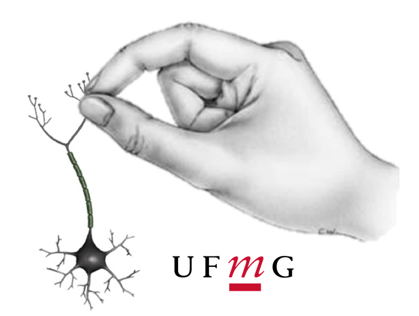
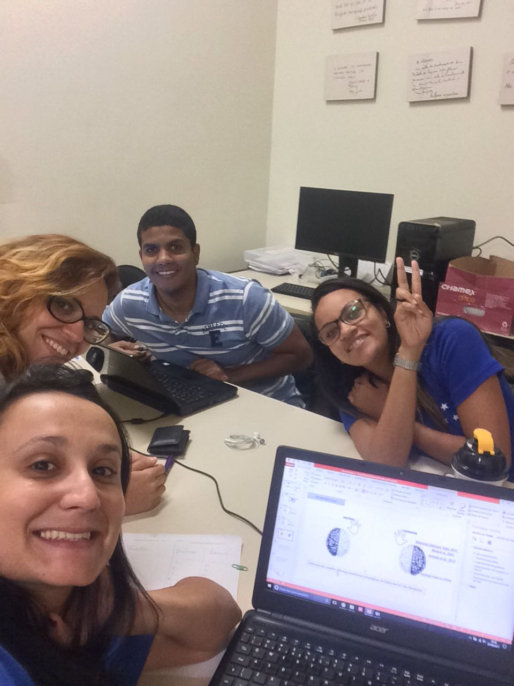
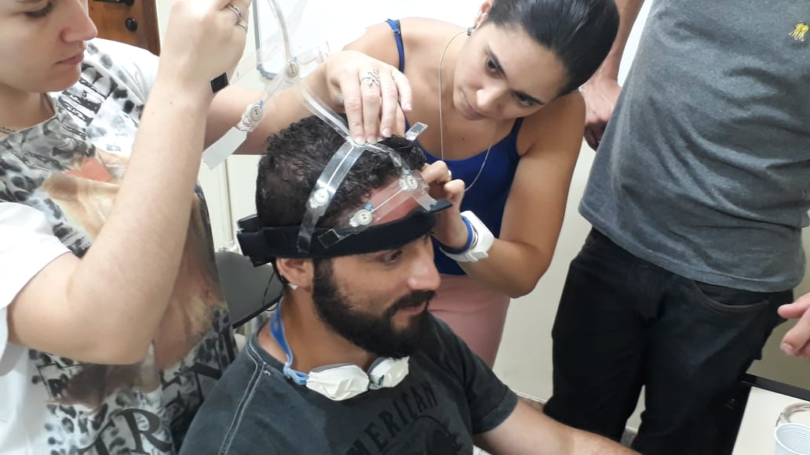
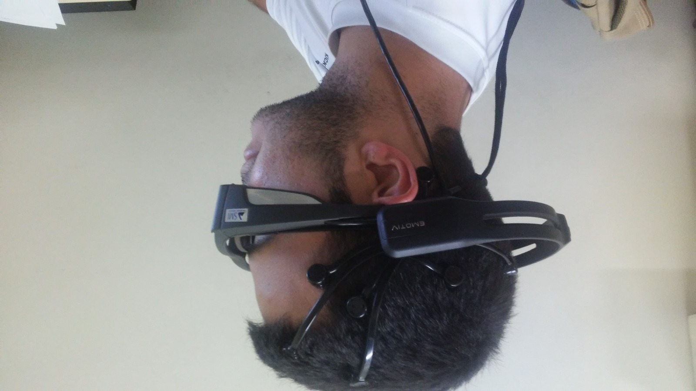
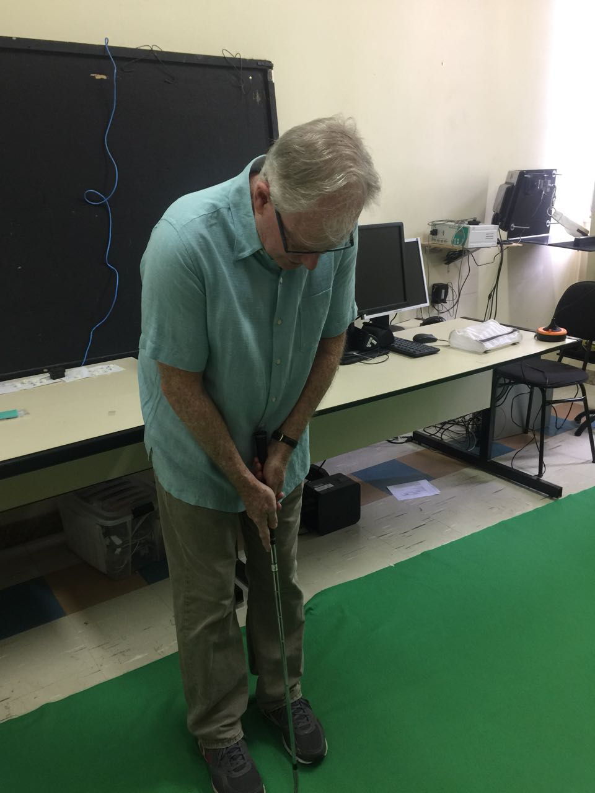
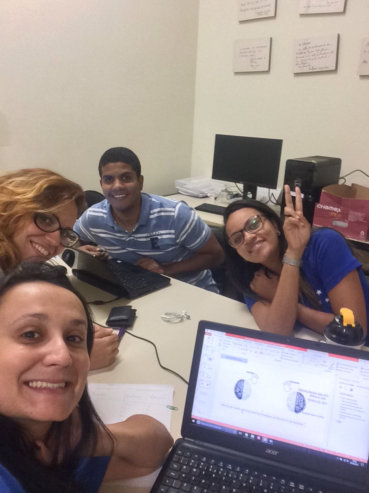
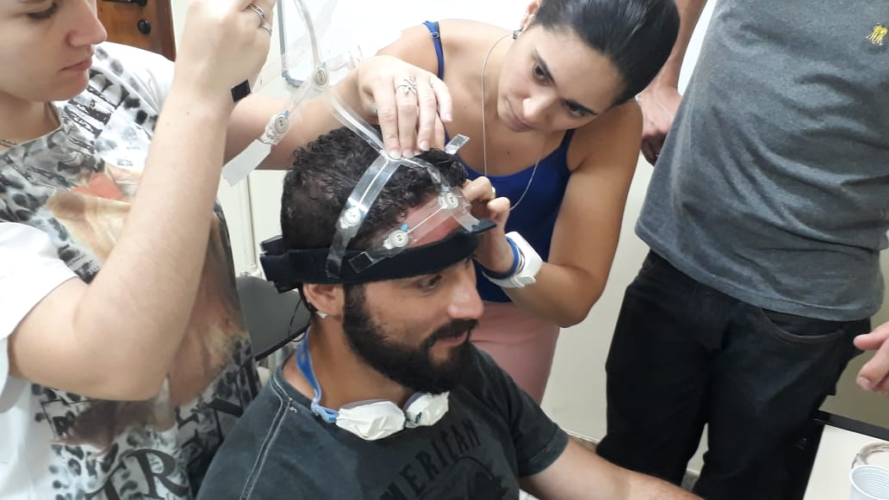
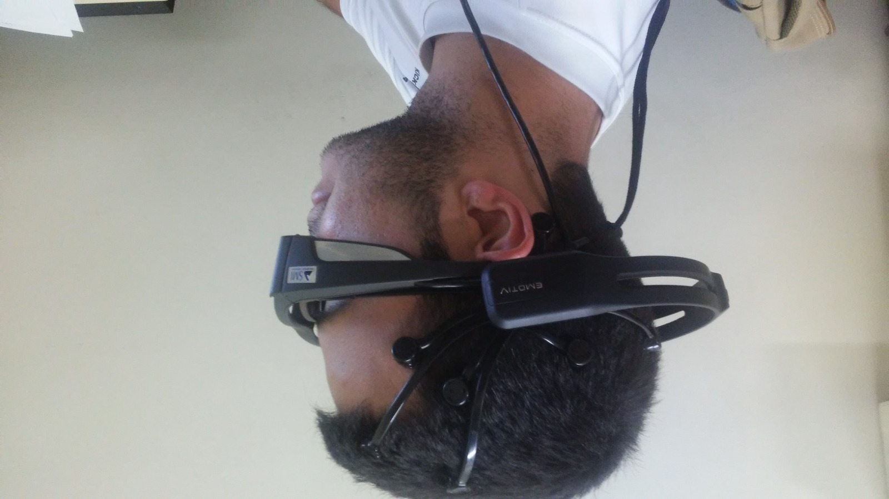
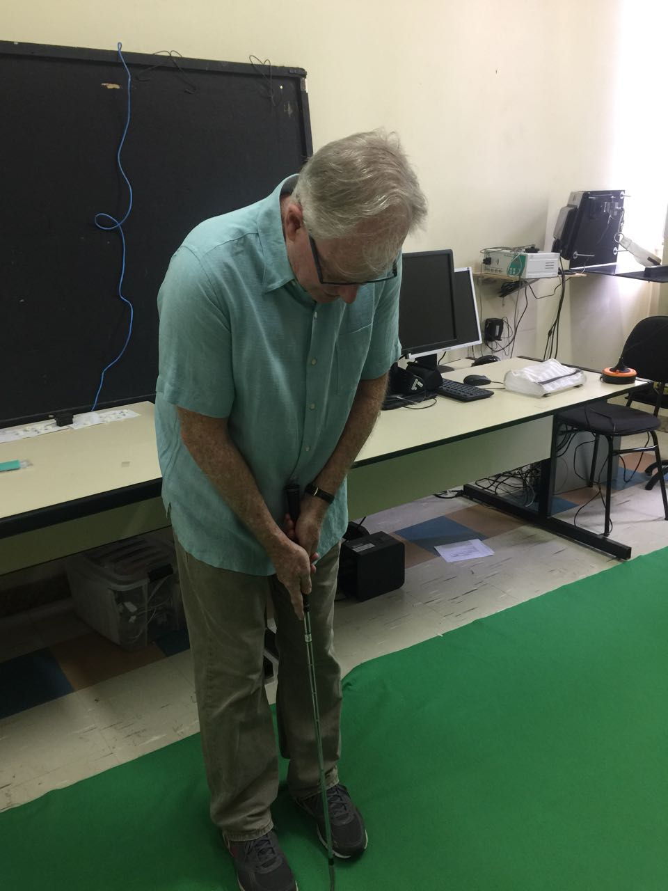

NNEUROM
Núcleo de Neurociências do Movimento
Sobre o NNEUROM
O Núcleo de Neurociências do Movimento (NNeuroM), coordenado pelo Prof. Dr. Guilherme Menezes Lage, é um núcleo de pesquisa do Grupo de Estudo em Desenvolvimento e Aprendizagem Motora (GEDAM) da Escola de Educação Física, Fisioterapia e Terapia Ocupacional da UFMG.
Nossa investigação sobre o estudo do movimento voluntário é realizado em diferentes níveis de análises, desde os mais macroscópicos (níveis sociológico e comportamental) até os mais microscópicos (eletrofisiológico e molecular).
O NNeuroM não caminha sozinho! Trabalhamos em colaboração com outros laboratórios da UFMG e mantemos parcerias com instituições no Brasil e ao redor do mundo. Nosso núcleo é composto por especialistas de diversas áreas - Educação Física, Fisioterapia, Terapia Ocupacional e Música.
 







Linhas de Pesquisa
Associação entre fatores que otimizam a aprendizagem motora e aspectos neurobiológicos
Modulação da resposta central no controle motor
Papel de áreas cerebrais no controle e aprendizagem motora
Funções executivas, transtornos psiquiátricos e comportamento motor
NNeuroM em Números
Criado em 2016, hoje o NNeuroM conta com:
3
Pós-Doutorados
7
Doutorados
8
Doutorandos
3
Mestres
2
Mestrandas
3
Iniciação Científica
7
Profissionais
3
Não-discentes